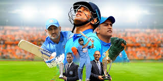

Here's the time line of
- July 7,1981 -Born in Ranchi on 7 july 1981.
- December 23,2004 -He made his One Day International (ODI) debut in December 2004 against Bangladesh and playes his fiest Test a year later against Sri Lanka
- April 5,2005-the first ODI hundred by an indian wicketkeeper.Dhoni sent up the order to No3 against Pakistan in vishakapatnam.
- March 4,2008-He is currently the captain of Chennai Super Kings (CSK), a franchise based team of Indian Premier League.
- Home series 2010 and 2013In test cricket his captaincy record was mixed, successfully leading India to series win against New Zealand (in 2009) and the Border-Gavaskar Trophy.
- December 30,2014-He announced his retirement from Tests on 30 December 2014.
- August 15,2020-Dhoni announced his retirement from international cricket on 15 August 2020.